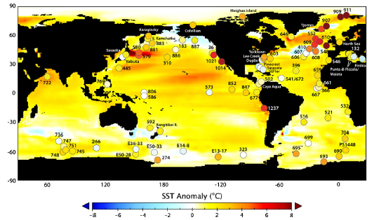

2. CO2の上昇で将来どのくらい気温が上昇するのか？

鮮新世温暖期と現在の表層水温の偏差（Dowsett et al., 2010）
気候の変化を考える上で、最も基本かつ重要なものさしは温度です。現在進行している地球温暖化の主因は人為的な温室効果ガス濃度（主にCO2）の上昇によるものと考えられていますが、将来の温暖化予測は「気候感度」というパラメータが鍵を握っています。ここで気候感度とはCO2濃度を倍増したときの地表気温の変化率であり、CO2濃度の上昇によって地表気温がどのくらい上昇するかは、この値によって決まります。
この気候感度ですが、実はまだ十分に制約されていません。現在のところ「2-4.5℃の範囲のどこか」と考えられています。まだまだ非常に不確かさが大きいといえます。さらに、最近の古気候研究により気候感度は気候状態に依存し変化することがわかってきました。このことは、いまよりも温暖化した気候状態になったときには気候感度が変わる可能性があることを意味します。つまり「気候感度の制約」と「気候感度と気候状態との関係」を明らかにすることが温暖化予測における核心的な問いといえます。
この問いに答えるには、やはり古気候の研究が欠かせません（現在の観測では現在の気候気候状態における気候感度の情報しか得られないので）。特に将来予測という観点では過去の温暖な時代を研究する必要があります。そのようなわけで、過去の温暖期（例えば、鮮新世（〜＋３℃）や中新世（〜＋５℃））に着目し、当時の気温やCO2濃度を高精度で復元することに取り組んでいます。